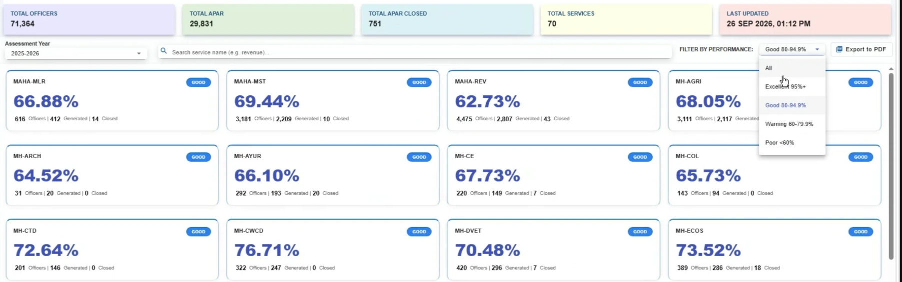

1
Align the status label with the threshold scale already defined in the filter
Group AAs presently displayed in SPARROW
Click to enlarge

What we observed
The filter on the Instance Dashboard defines four bands: Excellent 95%+, Good 80–94.9%, Warning 60–79.9%, Poor below 60%. The service cards presently display the label GOOD at values between 60% and 77%, which fall in the Warning band by that same scale.
Suggested refinement
Drive the label from the thresholds already written into the filter, so a service at 66.88% is shown as Warning and the card and the filter tell the same story. No new calculation is required; the bands exist.
EffortVery low — a single mapping between the existing bands and the label.
Indicative form of the suggestion
MAHA-MLRWARNING
66.88%
616 Officers | 412 Generated | 14 Closed
Why it helps. A senior officer scanning 70 cards reads the label before the number. Aligning the two means the dashboard can be relied upon at a glance, which is what it is for.